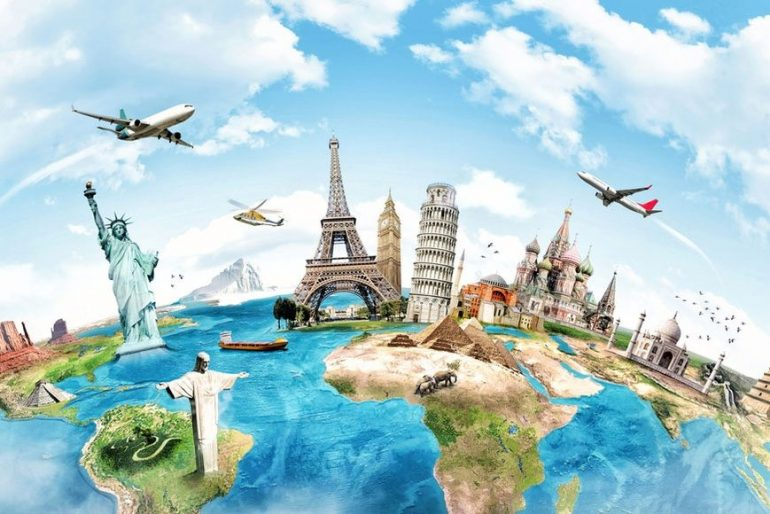
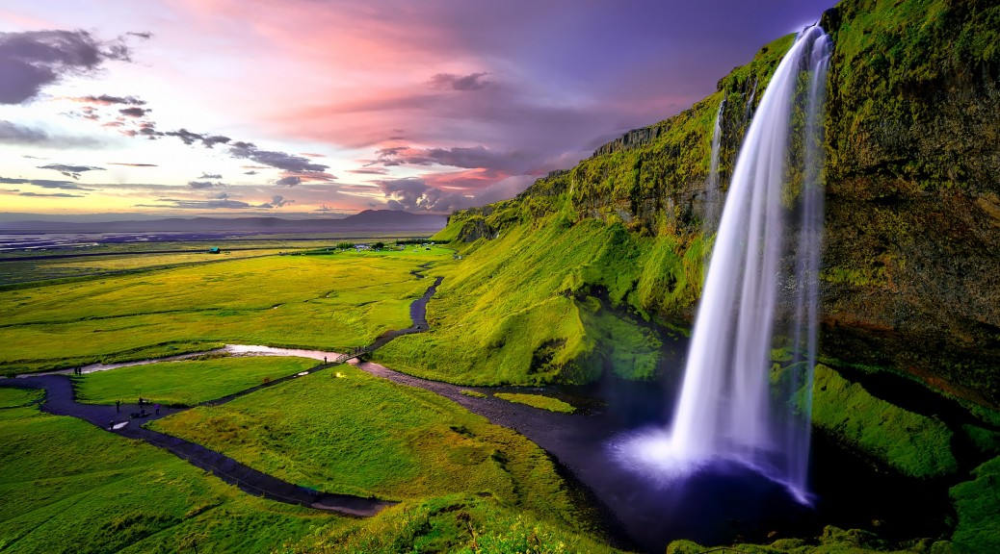
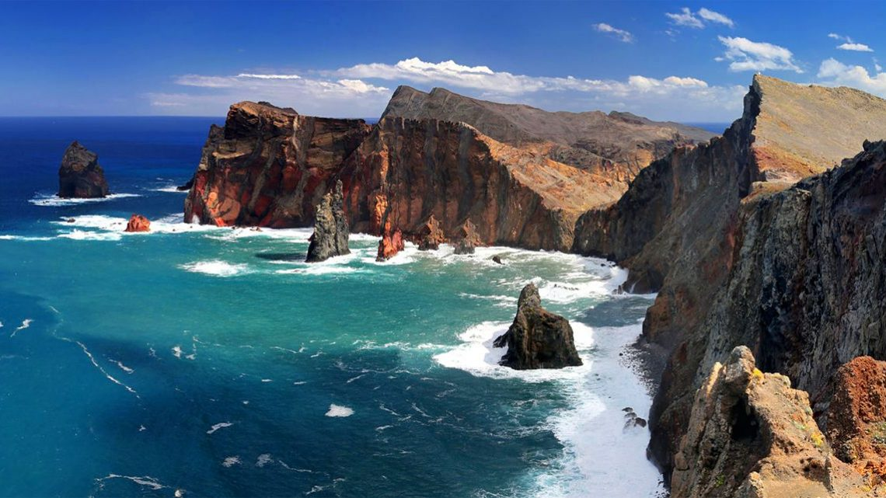
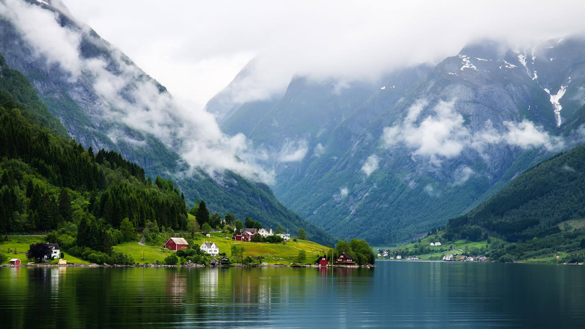

Wonderful world
Travels
Have a good time
Place you must visit
- Iceland
- Madeira
- Norway
Facts about Iceland that you might not know
Iceland is the world's largest island of volcanic origin
- The capital Reykjavik is the northernmost capital of the world
- The Dehtifoss waterfall is considered the most powerful waterfall in Europe: it discharges about 500 m³ of water per second. Sprays from it can be seen at a distance of a kilometer
- The pride of Iceland and one of its national symbols is the Blue Lagoon. This is an absolutely unique geothermal lake, the water temperature in it is +37° all year round.
Madeira is the island of eternal spring
- Madeira is an island where you can find tropical and Mediterranean vegetation at the same time.
- Pico do Arieiro - this attraction can be deservedly called dizzying
- Lava pools of Port Monish
Norway is a country with a rich history. A family of strict Vikings, today it is one of the most well-fed, calm and prosperous states in the world. The standard of living in Norway is one of the highest, as is the level of social security
- Norway ranks first in the world in terms of the length of fjords, overtaking Canada and New Zealand in this parameter
- Norway ranks first in Europe in terms of the number of car tunnels
- Vinnufossen is the highest waterfall in Europe (860 m) and the sixth highest waterfall in the world